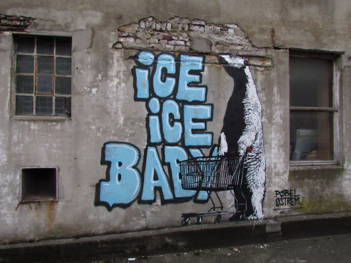
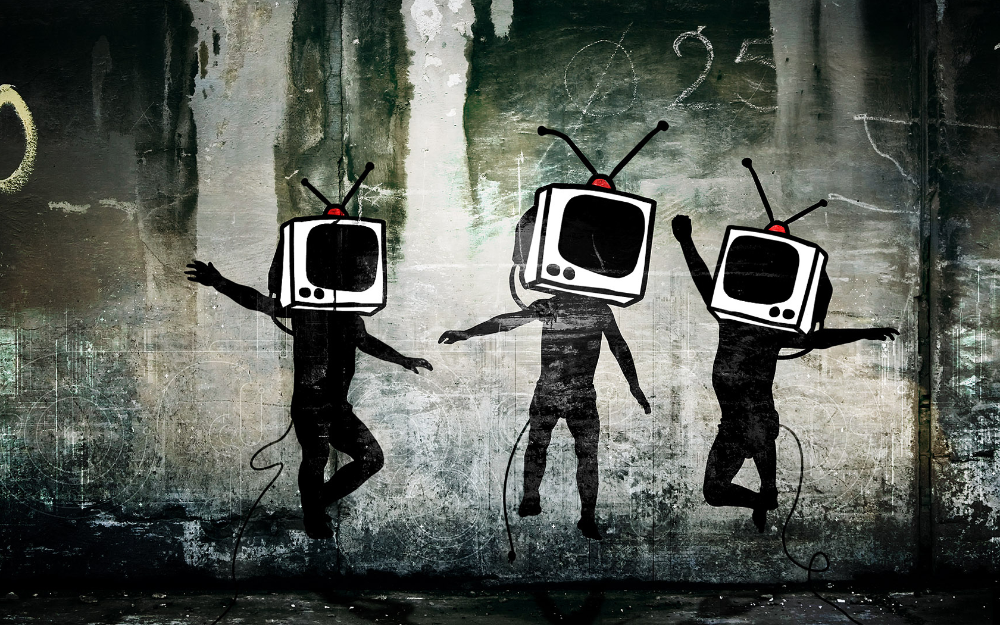
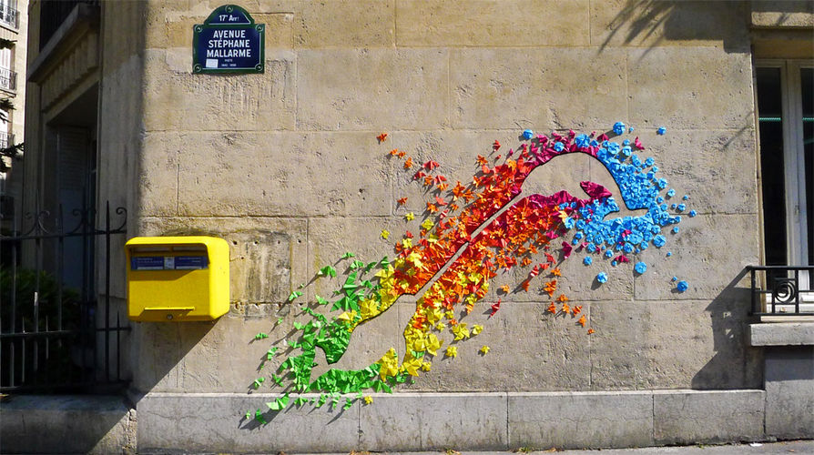

Gatekunst, eller på engelsk street art, er ulike typer ikke-kommersiell billedkunst som er oppført i det offentlige rom,
oftest ubestilt og gjerne ulovlig og anonymt på husfasader og andre steder i bymiljøer,
for eksempel som graffiti, sjablongmalerier eller fortaustegninger utført av amatørkunstnere eller som en postmoderne, aktivistliknende kunstbevegelse.
Gatekunst innebærer ofte bruk av spraymaling, enten i form av tradisjonell graffiti laget på frihånd,
eller spray på vegger gjennom stensiler (sjablonger) med utskåret tekst eller motiver.
Det kan være klistremerker, installasjoner, eller malerier som dekker hele vegger.
Det kan være strikking som integreres i trær eller tres på etablerte skulpturer, eller lyskunst og oppklistring av plakater.
Moderne gatekunst er en forlengelse av den tradisjonelle graffitien, og er oftest laget for å kommunisere med folk på gaten,
gjerne om sosiale eller politiske temaer. Utøverne innenfor gatekunst er ofte anonyme og de fleste opererer med pseudonymer,
slik som britiske Banksy eller norske Dolk, for å unngå problemer med politiet.


